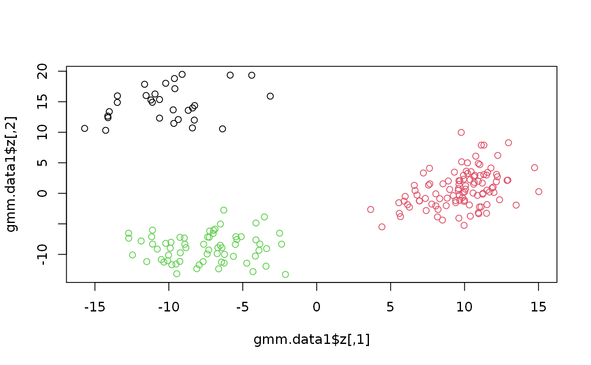

R/SimulateGMCMData.R, R/SimulateGMMData.R
SimulateGMCMData.RdEasy and fast simulation of data from Gaussian mixture copula models (GMCM) and Gaussian mixture models (GMM).
SimulateGMCMData(n = 1000, par, d = 2, theta, ...) SimulateGMMData(n = 1000, theta = rtheta(...), ...)
| n | A single integer giving the number of realizations (observations) drawn from the model. Default is 1000. |
|---|---|
| par | A vector of parameters of length 4 where |
| d | The number of dimensions (or, equivalently, experiments) in the mixture distribution. |
| theta | A list of parameters for the model as described in
|
| ... | In |
SimulateGMCMData returns a list of length 4 with elements:
A matrix of the realized values of the GMCM.
A matrix of the latent GMM realizations.
An integer vector denoting the component from which the realization comes.
A list containing the used parameters for the simulations
with the format described in rtheta.
A matrix of GMM realizations.
An integer vector denoting the component from which the realization comes.
As above and in rtheta.
The functions provide simulation of \(n\) observations and
\(d\)-dimensional GMCMs and GMMs with provided parameters.
The par argument specifies the parameters of the Li et. al. (2011)
GMCM. The theta argument specifies an arbitrary GMCM of
Tewari et. al. (2011). Either one can be supplied. If both are missing,
random parameters are chosen for the general model.
Li, Q., Brown, J. B. J. B., Huang, H., & Bickel, P. J. (2011). Measuring reproducibility of high-throughput experiments. The Annals of Applied Statistics, 5(3), 1752-1779. doi:10.1214/11-AOAS466
Tewari, A., Giering, M. J., & Raghunathan, A. (2011). Parametric Characterization of Multimodal Distributions with Non-gaussian Modes. 2011 IEEE 11th International Conference on Data Mining Workshops, 286-292. doi:10.1109/ICDMW.2011.135
Anders Ellern Bilgrau <anders.ellern.bilgrau@gmail.com>
set.seed(2) # Simulation from the GMM gmm.data1 <- SimulateGMMData(n = 200, m = 3, d = 2) str(gmm.data1)#> List of 3 #> $ z : num [1:200, 1:2] 5.67 -5.11 -13.48 10.37 -9.9 ... #> $ K : int [1:200] 2 3 1 2 3 3 1 3 3 3 ... #> $ theta:List of 5 #> ..$ m : num 3 #> ..$ d : num 2 #> ..$ pie : Named num [1:3] 0.127 0.481 0.393 #> .. ..- attr(*, "names")= chr [1:3] "pie1" "pie2" "pie3" #> ..$ mu :List of 3 #> .. ..$ comp1: num [1:2] -9.62 15.85 #> .. ..$ comp2: num [1:2] 9.68 1.26 #> .. ..$ comp3: num [1:2] -7.1 -9.12 #> ..$ sigma:List of 3 #> .. ..$ comp1: num [1:2, 1:2] 7.6 1.13 1.13 6.84 #> .. ..$ comp2: num [1:2, 1:2] 3.53 1.79 1.79 8.33 #> .. ..$ comp3: num [1:2, 1:2] 7.73 1.37 1.37 4.81 #> ..- attr(*, "class")= chr "theta"#> List of 4 #> $ u : num [1:1000, 1:2] 0.933 0.873 0.635 0.211 0.459 ... #> $ z : num [1:1000, 1:2] 7.93 4.89 -5.2 -11.27 -7.68 ... #> $ K : int [1:1000] 4 4 3 2 2 1 2 2 2 2 ... #> $ theta:List of 5 #> ..$ m : num 4 #> ..$ d : num 2 #> ..$ pie : Named num [1:4] 0.149 0.347 0.291 0.212 #> .. ..- attr(*, "names")= chr [1:4] "pie1" "pie2" "pie3" "pie4" #> ..$ mu :List of 4 #> .. ..$ comp1: num [1:2] -17.24 -1.19 #> .. ..$ comp2: num [1:2] -8.89 -8.69 #> .. ..$ comp3: num [1:2] -5.58 2.39 #> .. ..$ comp4: num [1:2] 5.94 3.49 #> ..$ sigma:List of 4 #> .. ..$ comp1: num [1:2, 1:2] 9.66 -2.56 -2.56 12.24 #> .. ..$ comp2: num [1:2, 1:2] 5.967 0.188 0.188 4.982 #> .. ..$ comp3: num [1:2, 1:2] 8.96 1.79 1.79 4.52 #> .. ..$ comp4: num [1:2, 1:2] 16.96 -7.52 -7.52 4.25 #> ..- attr(*, "class")= chr "theta"# Plotthe 2nd simulation par(mfrow = c(1,2)) plot(gmcm.data1$z, col = gmcm.data1$K) plot(gmcm.data1$u, col = gmcm.data1$K)# Simulation from the special case of GMCM theta <- meta2full(c(0.7, 2, 1, 0.7), d = 3) gmcm.data2 <- SimulateGMCMData(n = 5000, theta = theta) str(gmcm.data2)#> List of 4 #> $ u : num [1:5000, 1:3] 0.205 0.57 0.804 0.574 0.255 ... #> $ z : num [1:5000, 1:3] -0.551 0.74 1.817 0.753 -0.357 ... #> $ K : int [1:5000] 1 1 1 1 1 1 2 2 1 1 ... #> $ theta:List of 5 #> ..$ m : num 2 #> ..$ d : num 3 #> ..$ pie : Named num [1:2] 0.7 0.3 #> .. ..- attr(*, "names")= chr [1:2] "pie1" "pie2" #> ..$ mu :List of 2 #> .. ..$ comp1: num [1:3] 0 0 0 #> .. ..$ comp2: num [1:3] 2 2 2 #> ..$ sigma:List of 2 #> .. ..$ comp1: num [1:3, 1:3] 1 0 0 0 1 0 0 0 1 #> .. ..$ comp2: num [1:3, 1:3] 1 0.7 0.7 0.7 1 0.7 0.7 0.7 1 #> ..- attr(*, "class")= chr "theta"